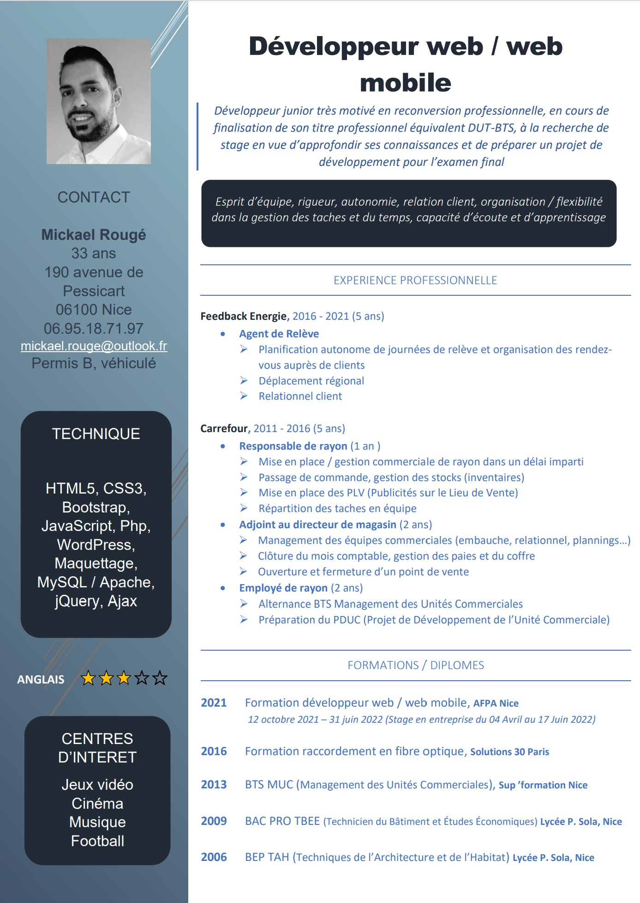
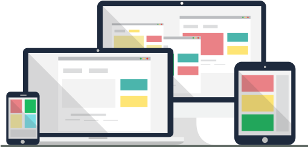
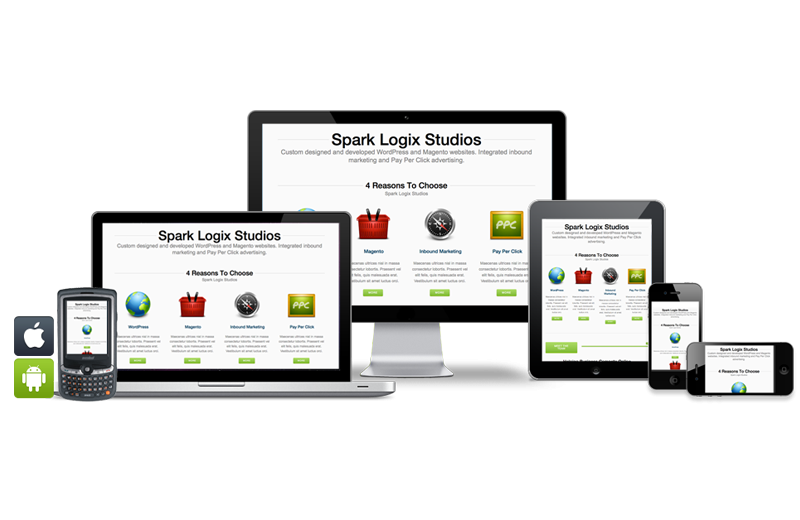
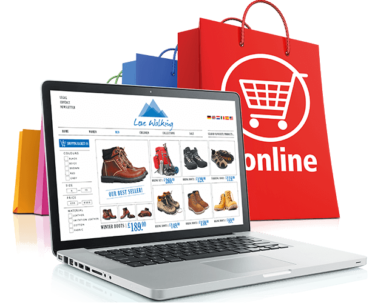

<!DOCTYPE html>
<html lang="fr">
    <head>
        <title>My Portfolio</title>
        <link rel="stylesheet" type="text/css" href="style.css">
        <link rel="stylesheet" href="https://cdnjs.cloudflare.com/ajax/libs/font-awesome/5.15.4/css/all.min.css" integrity="sha512-1ycn6IcaQQ40/MKBW2W4Rhis/DbILU74C1vSrLJxCq57o941Ym01SwNsOMqvEBFlcgUa6xLiPY/NS5R+E6ztJQ==" crossorigin="anonymous" referrerpolicy="no-referrer" />
    </head>
    <body>
        <aside>
            <section id="title">
                <a href="#hautDePage"><p>Mickael Rougé</p></a>
                <a href="#hautDePage"></a>
            </section>
            <section id="list">
                <a href="#competences"><p class="link">Compétences</p></a>
                <a href="#realisations"><p class="link">Réalisations</p></a>
                <a href="#formations"><p class="link">Aptitudes</p></a>
                <a href="#contact"><p class="link">Me contacter</p></a>
            </section>
            <section id="logos">
                <a href="https://www.linkedin.com/in/mickael-roug%C3%A9-877090130" target="blank"><i class="fab fa-linkedin"></i></a>
                <a href="https://github.com/Micka0675" target="blank"><i class="fab fa-github-square"></i></a>
                <a href="https://codepen.io/Mickael0675" target="blank"><i class="fab fa-codepen"></i></a>
            </section>
        </aside>
        <div id="wrapper">
            <header>
                <div id="blocSwitch"> 
                    <p id="txtBtn">light mode</p>
                    <label class="switch">
                        <input id="light" type="checkbox">
                        <span class="slider round"></span>
                    </label>
                </div>
                <h1 id="hautDePage">Developpeur Web & Web Mobile</h1>
            </header>
            <article id="competences">
                <h2>Compétences</h2>
                <section id="logages">
                    
                    
                    
                    
                    
                    
                    
                    
                </section>
                <section id="cv">
                    <a href="images/cv.jpg"></a>
                </section>
            </article>
            <article id="realisations">
                <h2>Realisations</h2>
                <a class="real" href="https://micka0675.github.io/jeuDuPendu/" target="blank"><section id="blocPendu"></section></a>
                <a class="real" href="https://micka0675.github.io/bblioSiteConcours/" target="blank"><section id="blocBblio"></section></a>
                <a class="real" href="https://micka0675.github.io/cvEnLigne/" target="blank"><section id="blocCv"></section></a>
                <a class="real" href="https://micka0675.github.io/sectionPaname/" target="blank"><section id="blocSp"></section></a>
                <div class="pop"id="pop1"></div>
                <div class="pop"id="pop2"></div>
                <div class="pop"id="pop3"></div>
                <div class="pop"id="pop4"></div>
                <!-- <section class="blocReal"></section>
                <section class="blocReal"></section>
                <section class="blocReal"></section>
                <section class="blocReal"></section> -->
            </article>
            <article id="formations">
                <h2>Aptitudes</h2>
                <!-- <section id="logages">
                    <ul>
                        <li>Maquetter une application</li>
                        <li>Réaliser une interface utilisateur web statique et 
                            adaptable</li>
                        <li>Développer une interface utilisateur web dynamique</li>
                        <li>Réaliser une interface utilisateur avec une solution de 
                            gestion de contenu ou e-commerce </li>
                        <li> Développer la partie back-end d’une application web 
                            ou web mobile en intégrant les recommandations de sécurité</li>
                        <li>Créer une base de données</li>
                        <li>Développer les composants d’accès aux données</li>
                        <li>Développer la partie back-end d’une application web ou 
                            web mobile</li>
                        <li>Elaborer et mettre en œuvre des composants dans une 
                            application de gestion de contenu ou e-commerce</li>
                    </ul>

                </section> -->
                <select id="choix1">
                    <option class="opts">-</option>
                    <option class="opts">Maquettage</option>
                    <option class="opts">Front-End</option>
                    <option class="opts">Back-End</option>
                </select>
                <div id="txtMaq">
                    <ul>
                        <li>Elaborer une arborescence</li>
                        <li>Definir un Zoning</li>
                        <li>Etablir un Wireframe</li>
                        
                        <li class="txtDesc">Le maquettage intervient en phase de conception avec  une forte implication de l'utilisateur final, actuel ou 
                            futur, le plus souvent dans une démarche projet itérative centrée sur l'expérience utilisateur (approche 
                            Agile). Chaque itération permet d'enrichir et de finaliser la maquette, afin que l’utilisateur valide l’interface 
                            graphique de l’application et en retrouve les principales fonctionnalités tout au long du cycle de 
                            développement. Les itérations peuvent donner lieu à des ateliers de présentation aux utilisateurs. Le 
                            maquettage intervient pour des applications sur des supports et environnements multiples.</li>
                    </ul>
                </div>
                <select id="choix2">
                    <option class="opts">-</option>
                    <option class="opts">Interface utilisateur web statique</option>
                    <option class="opts">Interface utilisateur web dynamique</option>
                    <option class="opts">Gestion de contenu ou e-commerce</option>
                </select>
                <select id="choix3">
                    <option class="opts">-</option>
                    <option class="opts">Développement Back-End</option>
                    <option class="opts">Bases de données</option>
                    <option class="opts">Gestion de contenu ou e-commerce</option>
                </select>
                <div id="txtIntS">
                    <h3>Réaliser une interface utilisateur web statique et 
                            adaptable</h3>
                    
                    <p class="txtDesc">À partir de la maquette de l’interface à réaliser, de la charte graphique et à l'aide d'un langage de 
                        présentation, créer les pages web statiques et adaptables, y compris pour les équipements mobiles, afin 
                        d’obtenir un rendu visuel optimisé et adapté à l’équipement de l’utilisateur et à l’ensemble des navigateurs 
                        ciblés.
                        Respecter les bonnes pratiques de structuration et de sécurité ainsi que les contraintes de l'architecture du 
                        matériel cible.
                        Publier les pages web sur un serveur et les rendre visibles sur les moteurs de recherche.
                        Rechercher des solutions pertinentes pour la résolution de problèmes techniques de rendu et 
                        d'accessibilité en utilisant de la documentation en langue française ou anglaise.</p>
                </div>
                <div id="txtIntW">
                    <h3>Développer une interface utilisateur web dynamique</h3>
                    
                    <p class="txtDesc">À partir de l'interface utilisateur web statique et adaptable, de la charte graphique et dans le respect des 
                        bonnes pratiques de développement et de sécurisation d'application web : développer, tester et 
                        documenter les traitements coté client, afin d’obtenir une page web dynamique et d’améliorer l’expérience 
                        utilisateur en particulier pour les équipements mobiles.
                        Optimiser l’application web pour une utilisation sur les équipements mobiles.
                        Publier l’application web et la rendre visible sur les moteurs de recherche.
                        Pratiquer une veille technologique, y compris en anglais, pour résoudre un problème technique ou mettre 
                        en œuvre une nouvelle fonctionnalité ainsi que pour s’informer sur la sécurité informatique et les 
                        vulnérabilités connues.</p>
                </div>
                <div id="txtGest">
                    <h3>Réaliser une interface utilisateur avec une solution de 
                        gestion de contenu ou e-commerce </h3>
                        
                    <p class="txtDesc">À partir d’un besoin client, installer, paramétrer ou maintenir une solution de gestion de contenu ou d’ecommerce afin de réaliser de manière facilitée un site vitrine ou une boutique en ligne, créer les différents 
                        comptes utilisateurs avec leurs droits et rôles dans le respect des règles de sécurité, créer ou adapter la 
                        structure du site ou de la boutique afin de permettre à l’utilisateur d’en gérer le contenu et d’en suivre 
                        l’activité.
                        Personnaliser l’aspect visuel du site ou de la boutique afin de respecter la charte graphique du client et 
                        d’être adapté à l’équipement de l’utilisateur, y compris mobile, et à l’ensemble des navigateurs ciblés.
                        Publier le site vitrine ou la boutique en ligne sur un serveur et le (la) rendre visible sur les moteurs de 
                        recherche.
                        Pratiquer une veille technologique, y compris en anglais, pour résoudre un problème technique ou mettre 
                        en œuvre une nouvelle fonctionnalité ainsi que pour s’informer sur la sécurité informatique et les 
                        vulnérabilités connues.</p>
                </div>
                <div id="txtBack">
                    <h3>Développer la partie back-end d’une application web ou web mobile
                    </h3>
                        
                    <p class="txtDesc">À partir des fonctionnalités décrites dans le dossier de conception technique, et dans le respect des 
                        bonnes pratiques de développement et de sécurisation d'application web, coder, tester et documenter les 
                        traitements côté serveur, afin d’assurer la collecte, le traitement et la restitution d’informations numériques.
                        Publier l’application web sur un serveur.
                        Pratiquer une veille technologique, y compris en anglais, pour résoudre un problème technique ou mettre 
                        en œuvre une nouvelle fonctionnalité ainsi que pour s’informer sur la sécurité informatique et les 
                        vulnérabilités connues.
                    </p>
                </div>
                <div id="txtBase">
                    <h3>Créer une Base de données</h3>
                        
                    <p class="txtDesc">À partir d’une demande client nécessitant le stockage de données, organiser les données et définir un 
                        schéma physique. A l’aide d’un SGBD, écrire et exécuter le script de création de la base de données, 
                        insérer les données de test, définir les droits d'utilisation et prévoir les procédures de sauvegarde et de 
                        restauration de la base de données de test.
                        Conformément à l’état de l’art de la sécurité et aux exigences de sécurité identifiées, exprimer le besoin de 
                        sécurité du SGDB afin de permettre l’élaboration d’une base de données sécurisée.
                        Rechercher, en utilisant de la documentation en langue française ou anglaise, des solutions pertinentes 
                        pour la résolution de problèmes techniques et de nouveaux usages, notamment des bases de données 
                        non relationnelles.
                        
                    </p>
                </div>
                <div id="txtSecu">
                    <h3>Elaborer et mettre en œuvre des composants dans une application de gestion de 
                        contenu ou e-commerce</h3>
                        
                    <p class="txtDesc">À partir du cahier des charges fonctionnel et du système de gestion de contenu ou d'e-commerce, dans le 
                        respect des bonnes pratiques de développement, de la solution logicielle, intégrer ou coder, tester et 
                        documenter des modules complémentaires afin de rendre le site web adapté aux besoins des utilisateurs, 
                        en respectant à chaque étape l’état de l’art de la sécurité informatique.
                        Publier l’application web sur un serveur.
                        Pratiquer une veille technologique, y compris en anglais, pour résoudre un problème technique ou mettre 
                        en œuvre une nouvelle fonctionnalité ainsi que pour s’informer sur la sécurité informatique et les 
                        vulnérabilités connues
                    </p>
                </div>
                
            </article>
            <article id="contact">
                <h2>Me contacter (Work In Progress)</h2>
                <section id="coord">
                    <a href="mailto:mickael.rouge@outlook.fr" target="blank"><p><i class="fas fa-envelope"></i>mickael.rouge@outlook.fr</p></a>
                    <a href="https://www.linkedin.com/in/mickael-roug%C3%A9-877090130" target="blank"><p><i class="fab fa-linkedin"></i>Linkedin : Mickael Rougé</p></a>
                    <a href="https://github.com/Micka0675" target="blank"><p><i class="fab fa-github-square"></i>GitHub : Mickael R.</p></a>
                    <a href="https://codepen.io/Mickael0675" target="blank"><p><i class="fab fa-codepen"></i>CodePen : Mickael0675</p></a>
                </section>
                <article id="blocForm">
                    <form>
                        <div id="blocRenseign">
                            <ul id="index">
                                <li>Nom</li>
                                <li>Prenom</li>
                                <li>Mail</li>
                            </ul>
                            <ul id="identite">
                                <li> <input class="info" id="nom" type="text"></li>
                                <li> <input class="info" type="text"></li>
                                <li> <input class="info" type="text"></li>
                            </ul>
                        </div>
                        <textarea id="commentaire">
                        </textarea>
                        <input id="com" type="button" value="Envoyer">
                        <div id="comBox"></div>
                    </form>
                </article>
                <footer>
                <section id="gauche">
                </section > 
                <section id="centre">
                    <p>Design & Built by Mickaël Rougé, 2022.</p>
                </section id="droite">
                <section>
                    
                </section>
                </footer>
            </div id="wrapper">
        <script src="script.js"></script>
    </body>
</html>